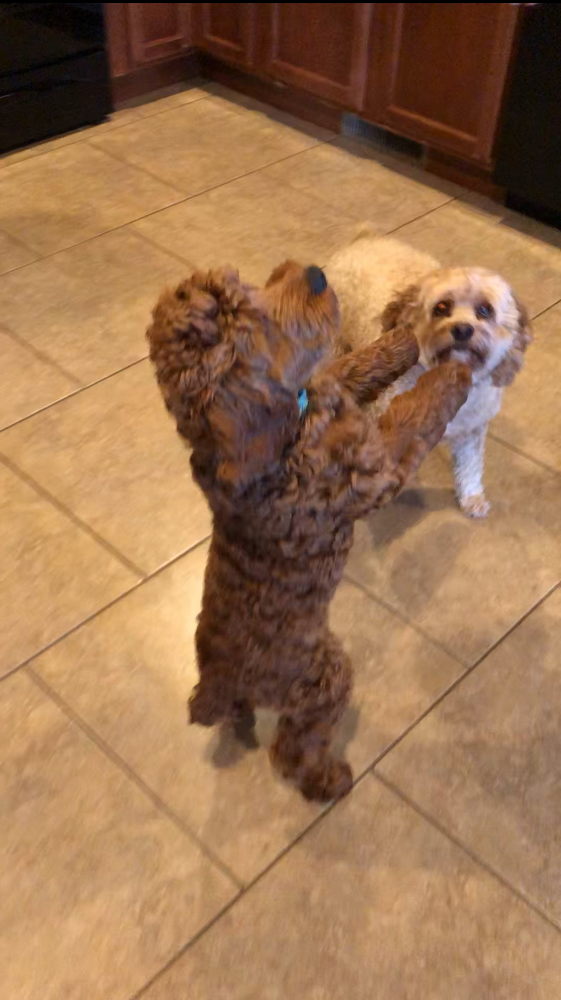

Hi, my name is John Goodwin and I'm the person behind this blog. I'm a 20 year old Computer Science student at MSU, meaning I'm open to basically anything that involves coding. I've also a big fan of video games ever since I was a kid, when my family got a Nintendo Wii. Some of my favorite franchises include:
... among many others. I've also been a lifelong animal lover, owning several pets over the years. Currently, we have two cockapoos named TJ and Chase (seen below), though we also had a dachshund named Tootsie, a greyhound named Benny and a cat named Mei Mei over the years.
With all that said, I hope you enjoy my blog and all of its stories!